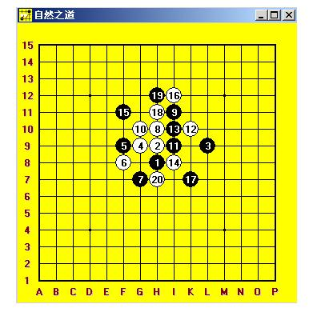

请问棋谱怎么做出来？
#1 请问棋谱怎么做出来？ 作者：剑魔令狐冲 发表时间：2009-2-16 2:53:10
我用过各种各样的打谱软件 也知道怎么打开LIB棋谱 可一直都不知道那些棋谱是怎么做出来的 懂的哥哥姐姐 教我 怎么做棋谱 特别是地毯谱怎么做出来 我很笨 做谱需要用哪些工具 做谱具体的操作步骤 是什么 请指教
做谱需要用哪些工具 做谱具体的操作步骤 是什么 请指教
#2 Re:请问棋谱怎么做出来？ 作者：岳麓小棋后 发表时间：2009-2-16 11:23:48
连珠终结者RENJUSOLVER
用这个软件需要定力，不然就是它驾驭你，而不是你驾驭它，生命诚可贵，三思而行
#3 Re:请问棋谱怎么做出来？ 作者：小丸.net 发表时间：2009-2-16 11:30:10
另外，打击一下楼主，做地毯谱用到的renju Solver要购买。每套200元。
#4 Re:请问棋谱怎么做出来？ 作者：不知 发表时间：2009-2-16 16:02:01
 我打击一下楼上的顺便帮助一下楼主，爱五子棋网上及其它各大网站上能下载到的打谱器就足以帮助楼主你做打谱软件了。
我打击一下楼上的顺便帮助一下楼主，爱五子棋网上及其它各大网站上能下载到的打谱器就足以帮助楼主你做打谱软件了。
#5 Re:请问棋谱怎么做出来？ 作者：剑魔令狐冲 发表时间：2009-2-16 18:30:53
那具体要怎么做啊 哥哥姐姐门 举个例子告诉我啊
#6 Re:请问棋谱怎么做出来？ 作者：wrwak 发表时间：2009-2-16 22:43:51
nara 不过是个软件男 有什么资格说别人，我去说过别人吗，我只针对棋不对人，我不是职业棋手 来这里发表看法，现在有人对我指手画脚，关键是这个人还是个没拿过任何大赛冠军的装B者，硬要说我硬搬软件，其实自己也还是依靠着软件，而且我贴图已经是把软件的界面贴出来了，NARA还要装，还要针对我，我今天不会为了几个威望金币忍气吞声。有问题提出来就是了，解决的了解决不了都是小事，非要装清高。少帅大家知道吧 前天我用 MDLFREE@126.COM 的qq昵称和他下了3把 此人是硬搬软件可以战胜？
现在我把图贴出来第一盘 我拿黑 大残月 对手不换
第二盘 我执白 少帅投了 其实我还没看到怎么赢
第三盘 大残月 我拿黑 少帅超时
前面是这样的 后面记不得了 下到了中后盘 黑棋有绝对先手 估计会和
#7 Re:请问棋谱怎么做出来？ 作者：五子棋来吧走吧 发表时间：2014-1-23 14:52:30